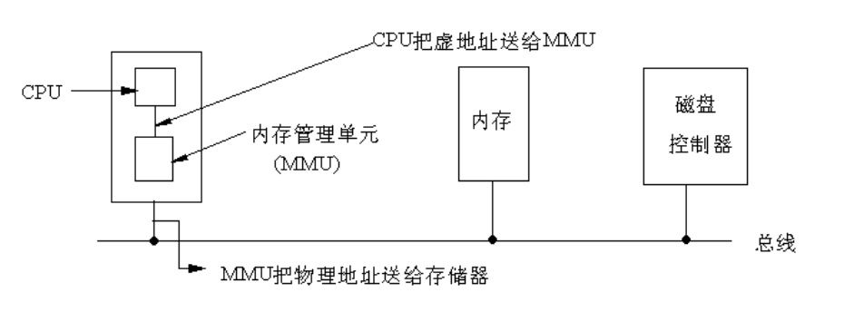
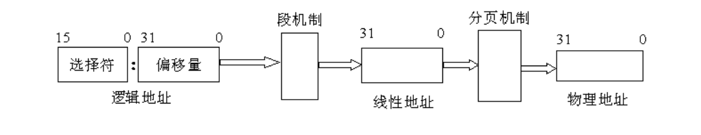
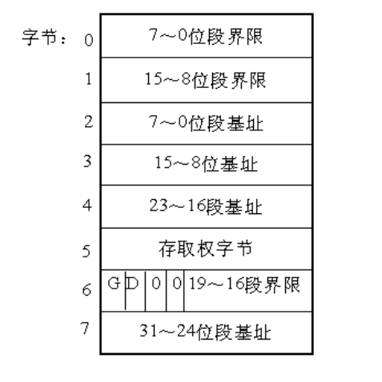

前言
最近在学习Linux内核，读到《深入理解Linux内核》的内存寻址一章。原本以为自己对分段分页机制已经理解了，结果发现其实是一知半解。于是，查找了很多资料，最终理顺了内存寻址的知识。现在把我的理解记录下来，希望对内核学习者有一定帮助，也希望大家指出错误之处。
分段到底是怎么回事
相信学过操作系统课程的人都知道分段分页，但是奇怪的是书上基本没提分段分页是怎么产生的，这就导致我们知其然不知其所以然。下面我们先扒一下分段机制产生的历史。
实模式的诞生（16位处理器及寻址）
在8086处理器诞生之前，内存寻址方式就是直接访问物理地址。8086处理器为了寻址1M的内存空间，把地址总线扩展到了20位。但是，一个尴尬的问题出现了，ALU的宽度只有16位，也就是说，ALU不能计算20位的地址。为了解决这个问题，分段机制被引入，登上了历史舞台。
为了支持分段，8086处理器设置了四个段寄存器：CS, DS, SS, ES.每个段寄存器都是16位的，同时访问内存的指令中的地址也是16位的。但是，在送入地址总线之前，CPU先把它与某个段寄存器内的值相加。这里要注意：段寄存器的值对应于20位地址总线的中的高16位，所以相加时实际上是16位内存地址（即段内偏移值）的高12位与段寄存器中的16位相加，而低4位保留不变，这样就形成一个20位的实际地址，也就实现了从16位内存地址到20位实际地址的转换，或者叫“映射”。
上面关于分段机制计算内存地址的描述比较难理解，画了一个图帮助理解
+-----------------+
| 20 | 20位地址总线
+-----------------+
+------------+
| 16 | 16位段地址
+------------+
+-------------+
| 12 | 4 | 16位内存地址（段内偏移量）
+--------+----+
实际物理地址 = （段寄存器地址 << 4） + （CPU 提交的访存地址）
保护模式的诞生（32位处理器及寻址）
- 80286处理器的地址总线为24位，寻址空间达16M，同时引入了保护模式（内存段的访问受到限制）
- 80386处理器是一个32位处理器，ALU和地址总线都是32位的，寻址空间达 4G。也就是说它可以不通过分段机制，直接访问4G的内存空间。虽然它是新时代的小王子，超越它的无数前辈，然而，它需要背负家族的使命--兼容前代的处理器。也就是说，它必须支持实模式和保护模式。所以，80386在段寄存器的基础上构筑保护模式，并且保留16位的段寄存器。
- 从80386之后的处理器，架构基本相似，统称为IA32（32 Bit Intel Architecture）。
IA32的内存寻址机制
寻址硬件
在 8086 的实模式下，把某一段寄存器左移4位，然后与地址ADDR相加后被直接送到内存总线上，这个相加后的地址就是内存单元的物理地址，而程序中的这个地址就叫逻辑地址（或叫虚地址）。在IA32的保护模式下，这个逻辑地址不是被直接送到内存总线而是被送到内存管理单元（MMU）。MMU由一个或一组芯片组成，其功能是把逻辑地址映射为物理地址，即进行地址转换，如图所示。

IA32的三种地址
- 逻辑地址:
机器语言指令仍用这种地址指定一个操作数的地址或一条指令的地址。 这种寻址方式在Intel的分段结构中表现得尤为具体，它使得MS-DOS或Windows程序员把程序分为若干段。每个逻辑地址都由一个段和偏移量组成。 - 线性地址：
线性地址是一个32位的无符号整数，可以表达高达232（4GB）的地址。通常用16进制表示线性地址，其取值范围为0x00000000～0xffffffff。 - 物理地址：
也就是内存单元的实际地址，用于芯片级内存单元寻址。 物理地址也由32位无符号整数表示。
MMU地址转化过程
MMU是一种硬件电路，它包含两个部件，一个是分段部件，一个是分页部件，在此，我们把它们分别叫做分段机制和分页机制，以利于从逻辑的角度来理解硬件的实现机制。分段机制把一个逻辑地址转换为线性地址；接着，分页机制把一个线性地址转换为物理地址。

IA32的段寄存器
IA32中有六个16位段寄存器：CS, DS, SS, ES，FS, GS.跟8086的段寄存器不同的是，这些寄存器存放的不再是某个段的基地址，而是某个段的选择符（Selector）。
分段机制的实现
段是虚拟地址空间的基本单位，分段机制必须把虚拟地址空间的一个地址转换为线性地址空间的一个线性地址。
为了实现这种映射，仅仅用段寄存器来确定一个基地址是不够的，至少还得描述段的长度，并且还需要段的一些其他信息，比如访问权之类。所以，这里需要的是一个数据结构，这个结构包括三个方面的内容：
- 段的基地址(Base Address)：在线性地址空间中段的起始地址。
- 段的界限(Limit)：在虚拟地址空间中，段内可以使用的最大偏移量。
- 段的保护属性(Attribute)：表示段的特性。例如，该段是否可被读出或写入，或者该段是否作为一个程序来执行，以及段的特权级等等。
上面的数据结构我们称为段描述符，多个段描述符组成的表称为段描述符表
段描述符
所谓描述符(Descriptor)，就是描述段的属性的一个8字节存储单元。在实模式下，段的属性不外乎是代码段、堆栈段、数据段、段的起始地址、段的长度等等，而在保护模式下则复杂一些。IA32将它们结合在一起用一个8字节的数表示，称为描述符 。

从图可以看出，一个段描述符指出了段的32位基地址和20位段界限(即段长)。这里我们只关注基地址和段界限，其他的属性略过。
段描述符表
各种各样的用户描述符和系统描述符，都放在对应的全局描述符表、局部描述符表和中断描述符表中。描述符表(即段表)定义了IA32系统的所有段的情况。所有的描述符表本身都占据一个字节为8的倍数的存储器空间，空间大小在8个字节(至少含一个描述符)到64K字节(至多含8K)个描述符之间。
- 全局描述符表(GDT)
全局描述符表GDT(Global Descriptor Table)，除了任务门，中断门和陷阱门描述符外，包含着系统中所有任务都共用的那些段的描述符。 它的第一个8字节位置没有使用。 - 中断描述符表IDT(Interrupt Descriptor Table)
中断描述符表IDT(Interrupt Descriptor Table)，包含256个门描述符。IDT中只能包含任务门、中断门和陷阱门描述符，虽然IDT表最长也可以为64K字节，但只能存取2K字节以内的描述符，即256个描述符，这个数字是为了和8086保持兼容。 - 局部描述符表(LDT)
局部描述符表LDT(local Descriptor Table)，包含了与一个给定任务有关的描述符，每个任务各自有一个的LDT。 有了LDT，就可以使给定任务的代码、 数据与别的任务相隔离。每一个任务的局部描述符表LDT本身也用一个描述符来表示，称为LDT描述符，它包含了有关局部描述符表的信息，被放在全局描述符表GDT中。
总结
IA32的内存寻址机制完成从逻辑地址--线性地址--物理地址的转换。其中，逻辑地址的段寄存器中的值提供段描述符，然后从段描述符中得到段基址和段界限，然后加上逻辑地址的偏移量，就得到了线性地址，线性地址通过分页机制得到物理地址。
首先，我们要明确，分段机制是IA32提供的寻址方式，这是硬件层面的。就是说，不管你是windows还是linux，只要使用IA32的CPU访问内存，都要经过MMU的转换流程才能得到物理地址，也就是说必须经过逻辑地址--线性地址--物理地址的转换。
Linux中分段的实现
前面说了那么多关于分段机制的实现，其实，对于Linux来说，并没有什么卵用。因为，Linux基本不使用分段的机制，或者说，Linux中的分段机制只是为了兼容IA32的硬件而设计的。
Intel微处理器的段机制是从8086开始提出的， 那时引入的段机制解决了从CPU内部16位地址到20位实地址的转换。为了保持这种兼容性，386仍然使用段机制，但比以前复杂得多。因此，Linux内核的设计并没有全部采用Intel所提供的段方案，仅仅有限度地使用了一下分段机制。这不仅简化了Linux内核的设计，而且为把Linux移植到其他平台创造了条件，因为很多RISC处理器并不支持段机制。但是，对段机制相关知识的了解是进入Linux内核的必经之路。
从2.2版开始，Linux让所有的进程（或叫任务）都使用相同的逻辑地址空间，因此就没有必要使用局部描述符表LDT。但内核中也用到LDT，那只是在VM86模式中运行Wine，因为就是说在Linux上模拟运行Winodws软件或DOS软件的程序时才使用。
在 IA32 上任意给出的地址都是一个虚拟地址，即任意一个地址都是通过“选择符:偏移量”的方式给出的，这是段机制存访问模式的基本特点。所以在IA32上设计操作系统时无法回避使用段机制。一个虚拟地址最终会通过“段基地址＋偏移量”的方式转化为一个线性地址。 但是，由于绝大多数硬件平台都不支持段机制，只支持分页机制，所以为了让 Linux 具有更好的可移植性，我们需要去掉段机制而只使用分页机制。但不幸的是，IA32规定段机制是不可禁止的，因此不可能绕过它直接给出线性地址空间的地址。万般无奈之下，Linux的设计人员干脆让段的基地址为0，而段的界限为4GB，这时任意给出一个偏移量，则等式为“0+偏移量=线性地址”，也就是说“偏移量＝线性地址”。另外由于段机制规定“偏移量<4GB”，所以偏移量的范围为0H～FFFFFFFFH，这恰好是线性地址空间范围，也就是说虚拟地址直接映射到了线性地址，我们以后所提到的虚拟地址和线性地址指的也就是同一地址。看来，Linux在没有回避段机制的情况下巧妙地把段机制给绕过去了。
另外，由于IA32段机制还规定，必须为代码段和数据段创建不同的段，所以Linux必须为代码段和数据段分别创建一个基地址为0，段界限为4GB的段描述符。不仅如此，由于Linux内核运行在特权级0，而用户程序运行在特权级别3，根据IA32段保护机制规定，特权级3的程序是无法访问特权级为0的段的，所以Linux必须为内核用户程序分别创建其代码段和数据段。这就意味着Linux必须创建4个段描述符——特权级0的代码段和数据段，特权级3的代码段和数据段。
总结
分段机制是IA32架构CPU的特色，并不是操作系统寻址方式的必然选择。Linux为了跨平台，巧妙的绕开段机制，主要使用分页机制来寻址。
参考资料
《深入分析Linux内核源码》